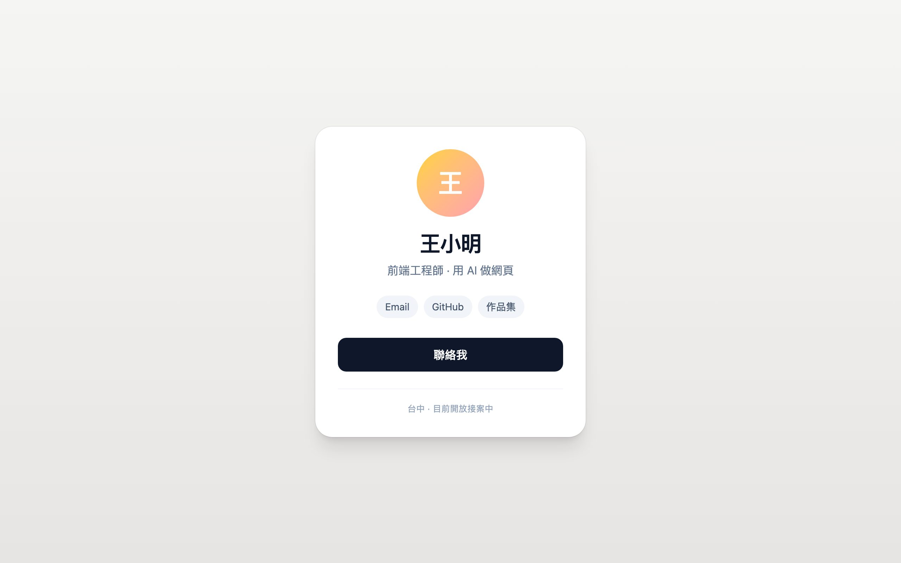
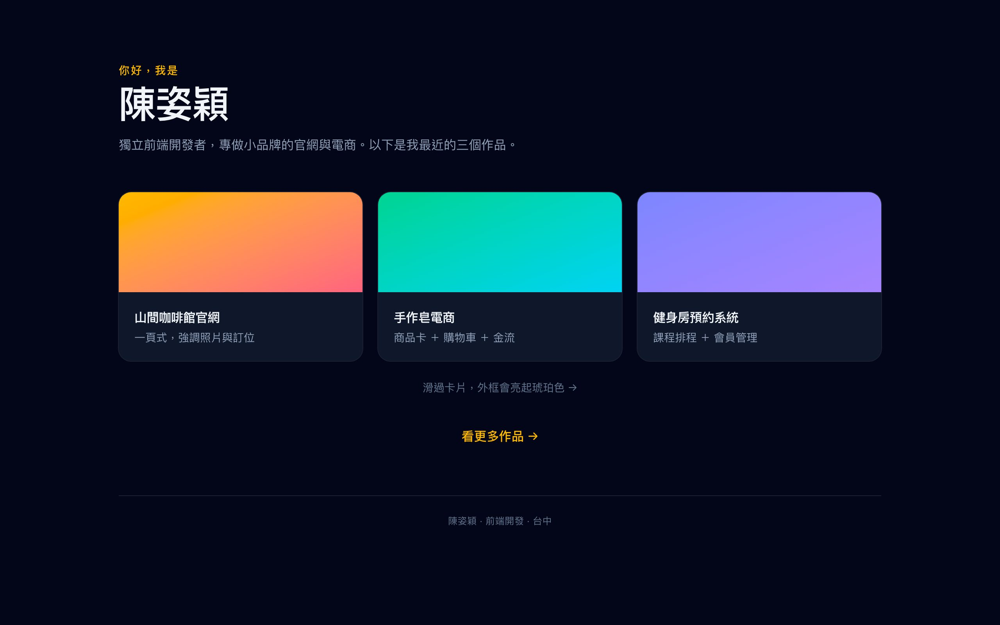
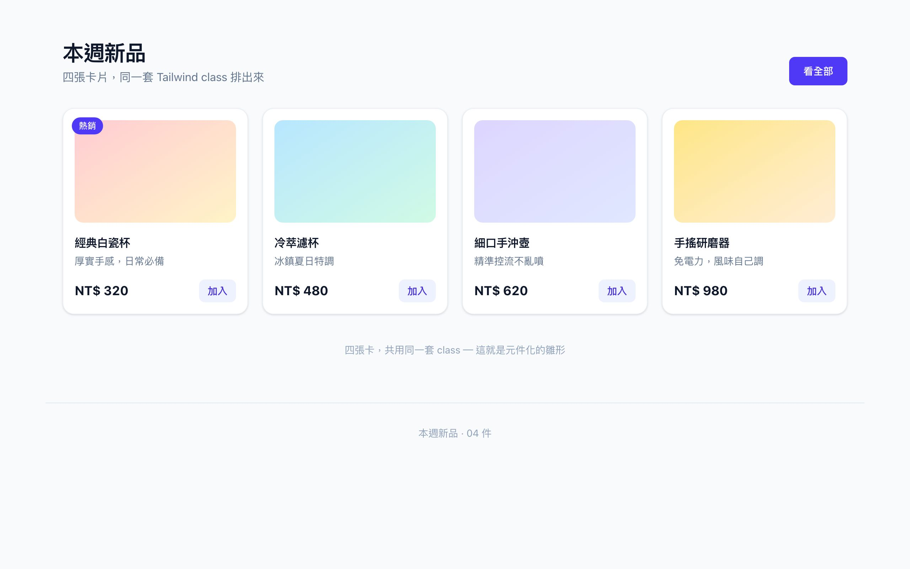
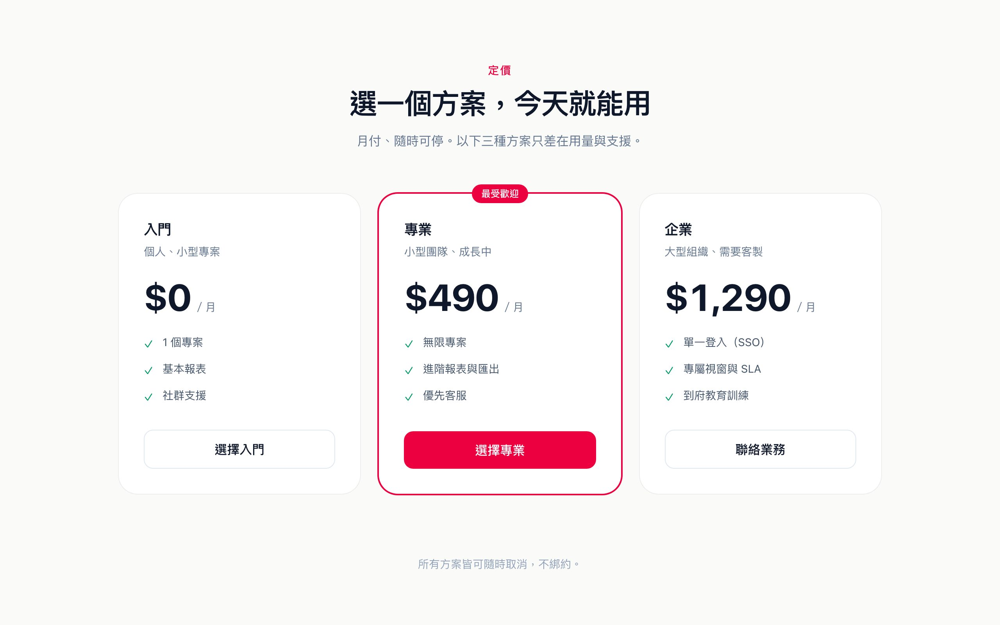
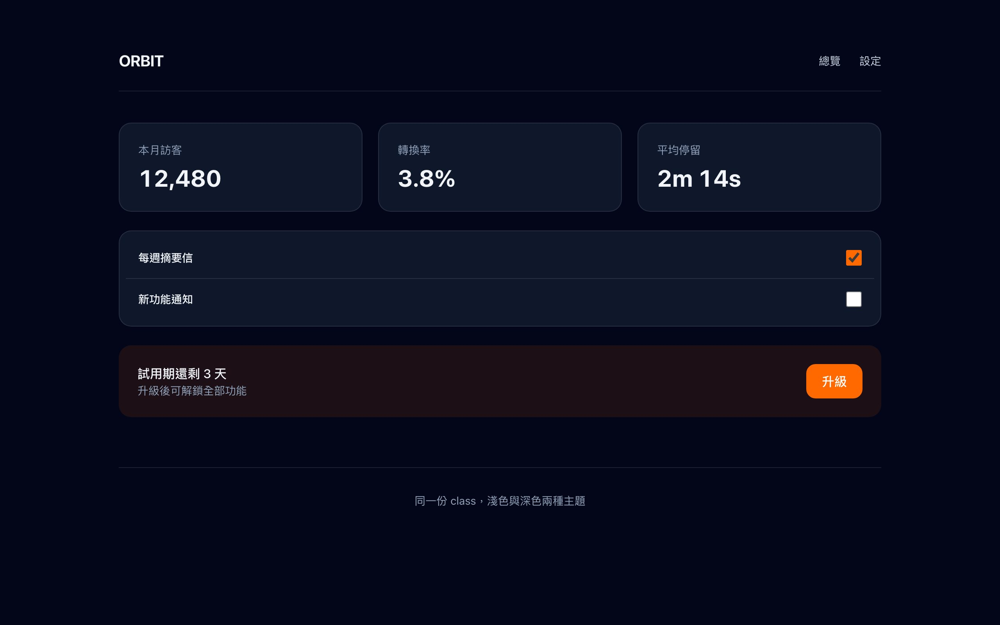

勤益科大進修部 115 學年度第 1 學期
互動式網頁設計
CH4｜Tailwind 快速上手與響應式排版
把整份 CSS，拆成一句一句的詞
開場
ii
今日目標
- Utility-first：把 CSS 拆成一行行 class
- 核心 Class：間距、Flex、Grid、文字、顏色
- 響應式 RWD：斷點與 mobile-first
- 產出：把上週名片改成 Tailwind 版
開場
iii
回顧上週：你會寫 CSS 了
- 選取器與權重：誰蓋掉誰
- 盒模型：padding、margin、border
- display／position：導覽列、釘住頂端
- 產出：一張純 CSS 的數位名片
開場
iv
上週做數位名片時，這些多半會踩到
- 「置中」只有一個寫法，但每個頁面都要重寫一遍
- 自己取的 class 名——
.box1、.temp——一週後就忘了是什麼 - 想微調間距，只能一個值一個值慢慢試，不知道要試幾個
- 改一個
.card，會不會連帶影響到別人，得整頁自己檢查
開場
v
做到這三個，今天就成功
- 讀得懂：看到
p-4就知道內距 4 - 組得出：用 Flex、Grid 加間距排版面
- 響應得出：手機、平板、桌面各自好看
0.
先把環境準備好
上週的 VS Code ＋ 今天多加一個擴充
開場
vi
上週裝好的，今天繼續用
- 編輯器：VS Code，開上週的
my-site資料夾 - Live Server：存檔自動重整，邊改邊看
- 三個擴充套件：HTML CSS Support、Live Server、Prettier
開場
vii
打 class 這件事，還可以更省力
- Tailwind 的 class 上千個，靠背一定會錯
text-slate-500打成text-slate-550，畫面就不變- 上週的 HTML CSS Support 只認得我寫過的 class
- 有一個擴充，專門把 Tailwind 的 class 變成可以選
開場
viii
今天多裝一個擴充
- 左側「擴充」圖示 → 搜尋
Tailwind CSS IntelliSense - 找作者是 Tailwind Labs 的那一個，按 Install
- 右下角提示 重新載入視窗 → 按下去
- 打開今天的
index.html，先不管它有沒有反應
bradlc.vscode-tailwindcss。看別人的教學對不上，就比這串字。
開場
ix
確認它有沒有「醒」過來
- 指令面板：
Cmd/Ctrl+Shift+P - 打
Tailwind→ 看得到 Tailwind CSS: Show Output 就是裝好了 - 輸出面板今天是空的，正常
開場
x
再打開一個設定
- 這行是在字串裡也開自動提示
class="…"就是字串，不開不跳- 整個學期受用
開場
xi
同一套 class，兩種裝法
開場
xii
今天沒跳出來，是正常的
- 這個擴充要認得 Tailwind 專案才會工作
- 我們今天是 CDN 路線，沒有專案檔 → 它還在睡
- 沒反應不是壞掉，是還沒輪到它
- 什麼時候會亮：之後裝了
tailwindcss的那一週
開場
xiii
今天不安裝建置工具，用 CDN
- 用上週的 VS Code ＋ Live Server 開
index.html - 在
<head>放一行 Tailwind 的 CDN script - 存檔、自動重整，邊改邊看
開場
xiv
不想開檔？先在網頁上玩
- 開
play.tailwindcss.com，免安裝、免註冊 - 左邊寫 class，右邊立刻看到效果
- 拉視窗寬度＝直接看手機／桌機差別
- 按 Share 會給你一個網址，可以傳給同學
開場
xv
另一種裝法：npm（今天不做）
- 正式專案用 npm，不是 CDN
- 要有 Node.js——今天機器上還沒裝
- 裝完會產生
node_modules，不能刪 - 好處：檔案小很多、能自訂色票與樣式
開場
xvi
Flowbite：可以參考的模板樣式
- Tailwind 的官方元件庫，建立在 Tailwind 之上
- 每個元件頁都有可參考的模板樣式
- 56 種以上元件：導覽列、按鈕、卡片、表單、下拉選單…
- 想不出長相時，去那裡看一眼
I.
Utility-first 是什麼
一句 class 做一件事，組合出整個版面
Part 1｜Utility-first
xvii
一句 class，只做一件事
flex→ 用 Flex 排版p-6→ 四周加內距rounded-xl→ 圓角text-2xl→ 加大字級
Part 1｜Utility-first
xviii
同一個卡片，兩種寫法
Part 1｜Utility-first
xix
class 名字就是文件
- 上週的
.box1、.temp要查 CSS 才知道 - Tailwind 的 class 看到名字就知道效果
- AI 讀得懂、你也讀得懂——vibe coding 的好底子
Part 1｜Utility-first
xx
長出來大概像這樣
II.
常用 Class
間距 · Flex · Grid · 文字 · 顏色
Part 2｜常用 Class
xxi
間距：p 與 m，共用一套數字
p-*內距（padding）、m-*外距（margin）- 數字是4 的倍數：
p-1=4px、p-4=16px、p-8=32px - 可指邊：
px-4左右、py-2上下
Part 2｜常用 Class
xxii
Flex：最常用的一行
flex→ 開啟 Flex 排版items-center→ 垂直置中justify-between→ 一左一右gap-4→ 子項之間的間距
Part 2｜常用 Class
xxiii
Grid：要「多欄等寬」就用它
grid→ 開啟 Gridgrid-cols-3→ 三欄gap-6→ 欄與欄的間距- 跟 Flex 的分工：Flex 排「一列」、Grid 排「格線」
Part 2｜常用 Class
xxiv
尺寸：寬高，和自訂數字
w-*寬、h-*高size-14寬高一起給（v4 新寫法）- 括號寫死：
w-[180px] w-1/2一半、h-screen滿畫面
Part 2｜常用 Class
xxv
hover 與 focus：滑過、點到時
Part 2｜常用 Class
xxvi
文字：字級、字重、顏色
text-*字級／font-*字重text-slate-*字色tracking-*字距leading-*行高
Part 2｜常用 Class
xxvii
顏色：一套色票＋ 60-30-10
- Tailwind 內建色票：
slate、amber、rose…每色 50–900 bg-*背景、text-*字色- 60-30-10：60% 主色、30% 副色、10% 點綴
- 點綴色只用少量（CTA 按鈕），整頁立刻有精神
III.
響應式 RWD
斷點 · mobile-first · 前綴
Part 3｜響應式 RWD
xxviii
五個斷點，由小往上疊
Part 3｜響應式 RWD
xxix
Mobile-first：先寫手機
- 先寫最小螢幕（base），再往上「加」
- 不是先寫桌面再縮到手機——方向反了會很累
- 手機是最少的版面，往上只加欄數、加寬度
Part 3｜響應式 RWD
xxx
前綴：在 class 前面加斷點
Part 3｜響應式 RWD
xxxi
最常做的：一欄 → 多欄
- 手機：
grid-cols-1（一欄到底） - 平板：
sm:grid-cols-2（兩欄） - 桌面：
lg:grid-cols-3（三欄） - 一行寫完，三種螢幕各就各位
Part 3｜響應式 RWD
xxxii
加碼：Dark Mode 也是前綴
- 跟斷點同一招：
dark:前綴 bg-white dark:bg-slate-900→ 淺色白底、深色深底- 跟系統「深色模式」連動，或自己切
範例
xxxiii
課堂示範 ＋ 六個延伸主題
- 名片｜數位名片——課堂一起做的那一張（Tailwind 版）
- A1｜個人作品集——響應式卡片牆，手機 1 欄到桌面 3 欄
- A2｜一頁式形象頁——導覽列＋Hero＋三卡＋CTA
- A3｜商品卡集合——同一套 class 排四張商品卡
- B1｜產品定價頁——三種方案的比較頁
- B2｜活動報名表單——講座與工作坊的報名表
- B3｜深色模式頁——
dark:前綴，同一組 class 兩種主題
範例｜課堂示範
xxxiv
範例｜數位名片（Tailwind 版）

- 要做的區塊：頭像、名字、一句話、標籤列、按鈕
- 用到今天：
min-h-screen置中、Flex 標籤列、圓角、text-slate-*字色階 - 對比上週：不用 style.css，一行行 class 就成型
延伸練習｜A 組 入門
xxxv
範例 A1｜個人作品集（響應式卡片牆）

- 要做的區塊：頁首名字＋一句話、三張作品卡、頁尾連結
- 用到今天：Grid 響應式 1→2→3 欄、
sm:／lg:斷點、深色配色、hover 抬升 - 場景：求職或接案時，直接給對方看的一頁
延伸練習｜A 組 入門
xxxvi
範例 A2｜一頁式形象頁（Landing）
- 要做的區塊：導覽列、Hero 大字＋兩顆按鈕、三個賣點、CTA
- 用到今天：Flex ＋
hidden md:flex、響應式字級text-5xl md:text-6xl、Grid 三欄 - 場景：小店、工作室最常見的「一頁式形象網站」
延伸練習｜A 組 入門
xxxvii
範例 A3｜商品卡集合（四卡一排）

- 要做的區塊：頁首、四張商品卡（縮圖／品名／價格／按鈕）
- 用到今天：Grid 1→2→4 欄、
flex justify-between價格列、hover 抬升 - 場景：小店、市集、電商的商品列表
延伸練習｜B 組 挑戰
xxxviii
範例 B1｜產品定價頁（三方案）

- 要做的區塊：標題、三張方案卡、中間的推薦方案
- 用到今天：Grid 三欄、
ring-2加粗強調、Flex 清單打勾、tabular-nums對齊數字 - 場景：SaaS、顧問服務最常被要求做的比較頁
延伸練習｜B 組 挑戰
xxxix
範例 B2｜活動報名表單
- 要做的區塊：左邊活動資訊、右邊報名表（姓名／Email／程度／人數）
- 用到今天：Grid 兩欄版面、
label for連結輸入框、focus:ring狀態、按鈕可點擊面積 - 場景：講座、工作坊、課程的報名頁
延伸練習｜B 組 挑戰
xl
範例 B3｜深色模式頁（dark:）

- 要做的區塊：頁首、三張統計卡、設定開關卡、橘色升級區
- 用到今天：
dark:前綴、同一組 class 兩種主題、表面色階、跟系統連動 - 場景：任何需要「白天黑夜都好看」的介面
延伸
xli
用 AI Agent 幫你組 class
- class 自解釋，AI 讀得懂、也寫得準
- 一句話描述版面，AI 直接給 class 組合
- 你的角色變成審美與調整：換色、調間距、改斷點
延伸
xlii
幾個最常踩的坑
- 忘記加 CDN → 所有 class 都沒效果
-
md-flex少冒號 → 斷點完全不起作用 - 用開發人員工具看 class 有沒有套上
收尾
xliii
今天的 class，一頁查
收尾
xliv
本週帶走的四件事
- Utility-first：不另存 CSS
- 核心 class：間距、Flex、Grid、尺寸、文字、顏色
- RWD：先寫手機，前綴往上疊
- 工具：CDN／npm、Flowbite 當字典
Q & A
class 沒生效、斷點不作用的同學，留下來用開發人員工具一起找。